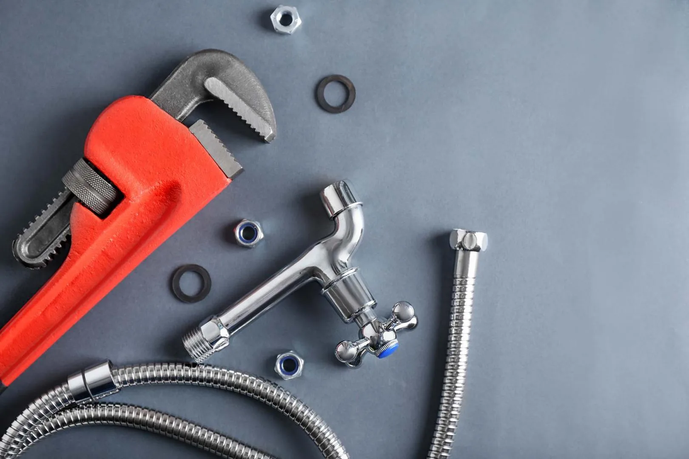

Un tuyau qui fuit ?

Dépannage en cas d’urgence : panne, fuite, dysfonctionnement d’un équipement.
Rayon de 15 km
Neuf, rénovation et dépannage. Le partenaire des particuliers et des professionnels.
Plombiers chauffagistes qualifiés et expérimentés, nous assurons la qualité des travaux réalisés. Professionnalisme, efficacité et réactivité sont nos mots d’ordre.
Dépannage en cas d’urgence : panne, fuite, dysfonctionnement d’un équipement.
Rayon de 15 kmGoogle · 2021« Contacté la veille pour le lendemain, Pierre a su se rendre disponible rapidement et a été ponctuel. Venu pour un problème de bouchon dans nos canalisations, Pierre a fait preuve de persévérance et y a passé un long moment, jusqu’à la bonne évacuation du problème ! Un professionnel de confiance à contacter que je vous recommande. »
Google · 2025« Intervention très rapide pour une fuite bien mystérieuse. À suivre. Très pro, a tout contrôlé. Merci encore. »
Google · 2025« Merci pour votre disponibilité et votre efficacité sans nous assommer de frais. Bon travail. À recommander. »
Google · 2026« Agréable, homme d’expérience, problème résolu en 10 min. »
Google · 2025« Efficace, rapide, de bon conseil ! »
Google · 2021« Aucun problème bon travail donc bon plombier et de bons conseils. »
Des travaux réalisés quelle que soit leur complexité.
La maîtrise des techniques, et le bon matériel.
Des garanties sur les travaux réalisés.
Impeccables, dans un souci de qualité.